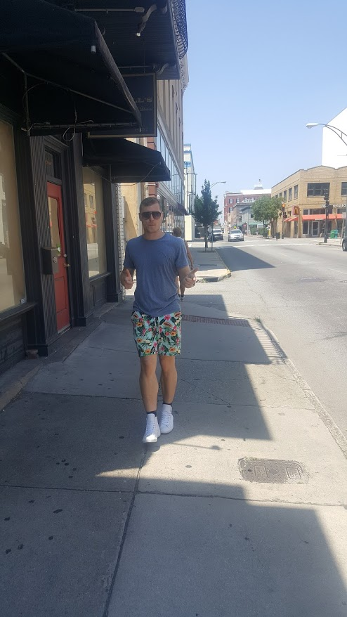
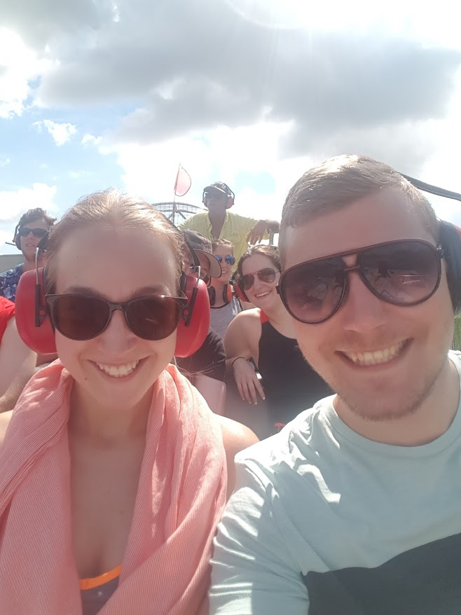
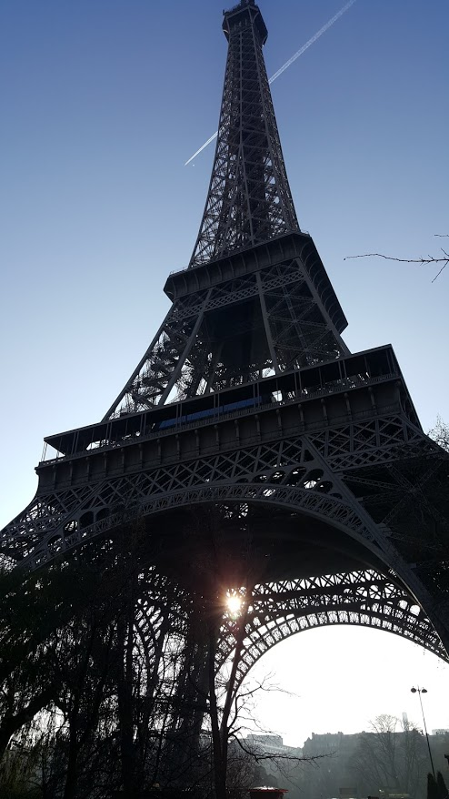
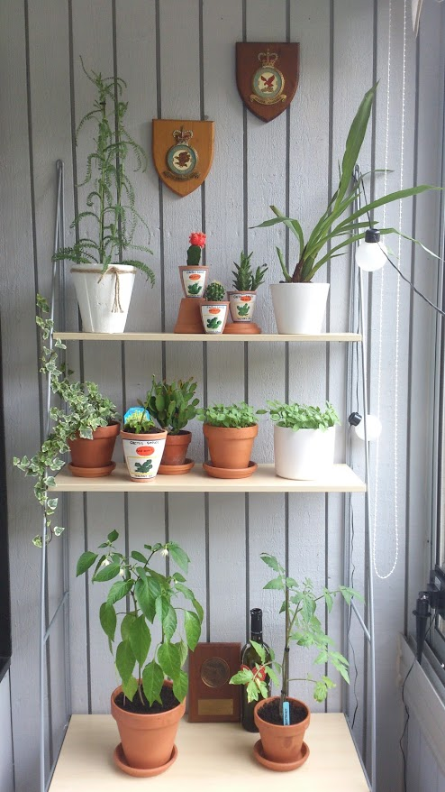

You are now visiting the about section of this homepage

Welcome to this school-project homepage of mine. My name is Daniel Bromann Rasmussen and I am 28 years old.

I live together with my girlfriend Martina in a small town called Hässleholm. Hässleholm is located on the north east side of Skåne county.
To learn more about me, start by clicking on the "about" button on the top menu to reveal more information about me underneath these three boxes ?
A lot of my spare time is filled with me spending time with my dog. Whatevers left of that and eating I nowadays try to spend on studying to become a Front End developer.

Me and my girlfriend try to travel as much as possible as we both really enjoy this.

Another hobby besides my dog and my studies is taking care of all my indoor plants.